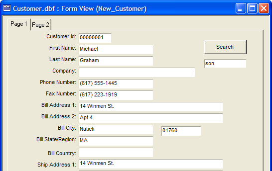
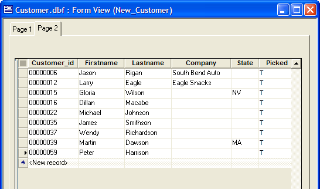

Searching the Text Fields of a Record
The following script shows how to search the text fields of a record to see if they contain a match to a character search value. This illustration uses the Customer table of the AlphaSports sample database.
A new form named New_Customer contains a tabbed control with two pages. The first page contains a text field that sets the value of a global variable named var->search_word.

The form also contains a button with the following script. First the script gets a count of fields, then it opens the first record.
|
dim tbl as P dim fld as P dim fbuffer as C dim fld_count as N dim k as N dim nam as C tbl = table.current() fld_count = tbl.fields_get() tbl.fetch_first() |
The script sequentially reads the records of the file until it reaches the end, then it resets to the first record. The picked field of each record is set to False. This field serves to indicate which records contain the search word. Then the script steps through the fields of the record.
|
while .not. tbl.fetch_eof() tbl.change_begin() tbl.picked = .f. tbl.change_end(.t.) tbl.change_begin() for k = 1 to fld_count fld = tbl.field_get(k) nam = fld.name_get() |
Because not all fields contain text, the script tests for the three types that might contain text using <FIELD>.TYPE_GET(). The script uses RTF_FIELD_TO_TEXT() for the rich text memo field and <FIELD>.VALUE_GET() for the text and text memo fields. If the search word is found, then the picked field is set to True and the script exits from the FOR loop.
|
if (fld.type_get()= "RTF") then fbuffer = rtf_field_to_text(nam) if (var->search_word $ fbuffer) then tbl.picked = .t. exit for end if else if (fld.type_get()= "M") then fbuffer = fld.value_get() if (var->search_word $ fbuffer) then tbl.picked = .t. exit for end if else if (fld.type_get()= "C") then fbuffer = fld.value_get() if (var->search_word $ fbuffer) then tbl.picked = .t. exit for end if end if next k tbl.change_end(.t.) tbl.fetch_next() wend tbl.fetch_first() |
After the search is complete, clicking on Page 2 of the tabbed control displays an embedded browse. This browse shows only the records of the table where picked is TRUE.

When the user selects one of the tabbed pages, the following script (attached to the OnTabChange event) resets the form's filter so that Page 1 shows all records and Page 2 only shows selected records.
|
dim ptr as P ptr = Tabbed1.this if ptr.tab_get()= 2 then :New_Customer.queryrun("Picked = .T.") else :New_Customer.queryrun(".T.") end if |